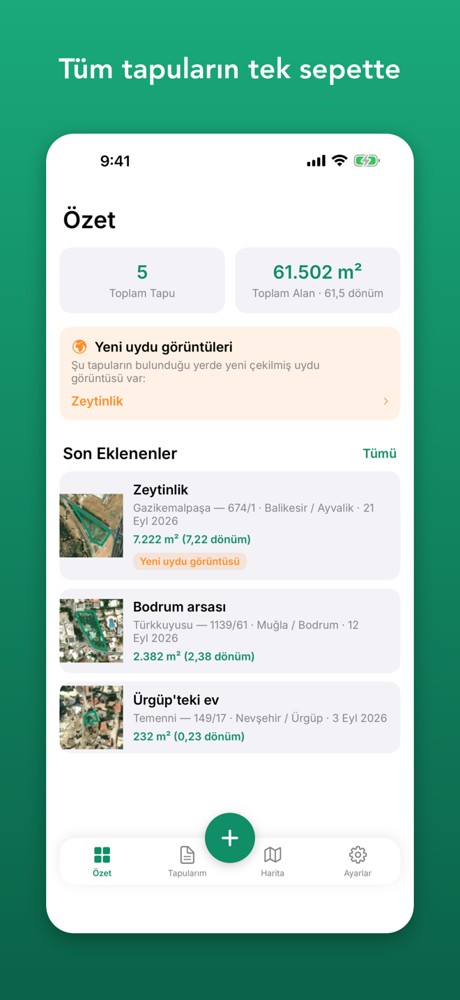
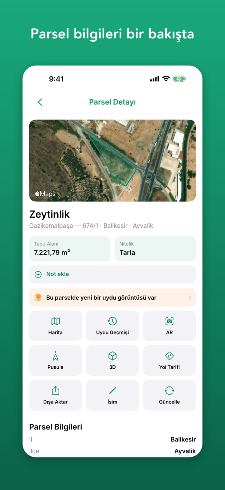
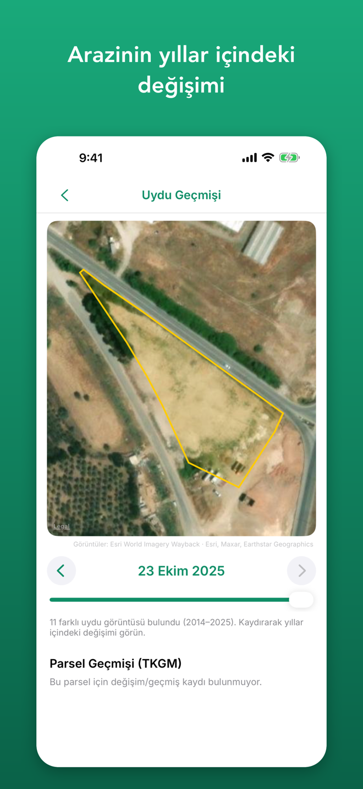
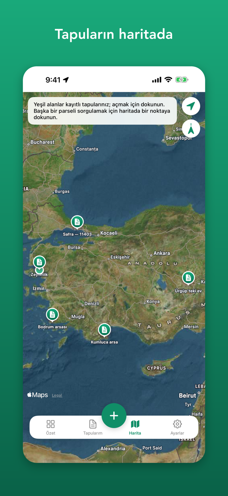
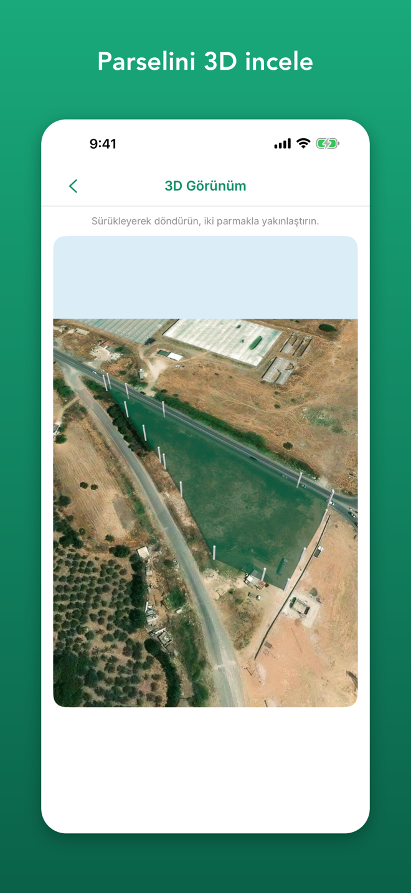
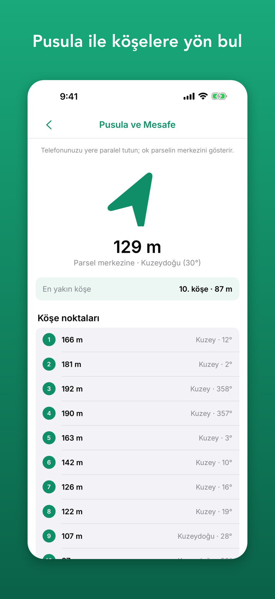

Parselini bul, haritada gör, sepetine ekle.
Türkiye'deki parselini TKGM'nin herkese açık parsel sorgu verileriyle bul, uydu haritasında sınırlarını gör ve arazinde yıllar içinde nelerin değiştiğini uydu arşivinden incele.
App Store'dan İndir





Neden Tapu Sepeti?
Parselini kolayca bul
- İl, ilçe ve mahalle seç, ada/parsel numarasıyla sorgula
- Adres yazarak en yakın parseli bul
- Enlem/boylam koordinatıyla ya da haritada bir noktaya dokunarak sorgula
- Arazideysen "Bulunduğum yerdeki parsel" ile tek dokunuşla sorgula
Tüm tapuların tek yerde
- Parselleri kaydet, "Köydeki tarla" gibi isimler ver, notlar ekle
- Tapularını listede ve haritada birlikte gör; toplam alan özeti
- Hepsini tek KML/GeoJSON dosyasında dışa aktar
- Sorguladığın parseller cihazında saklanır, internet olmadan da açılır
Uydu geçmişi
- Farklı tarihli uydu görüntülerini tara, arazinin yıllar içindeki değişimini gör
- Parsel sınırı her görüntünün üzerinde çizili
- Kayıtlı tapularının yerinde yeni uydu görüntüsü yayımlanınca haber ver
Arazide yönünü bul
- Uydu haritasında sınır ve numaralı köşe noktaları
- Pusula ile merkeze ve köşelere yön ve mesafe
- Konum hassasiyeti yüksek telefonlarda köşe noktalarını AR ile yaklaşık olarak gör
- 3D görünüm ve Apple Haritalar ile yol tarifi
Gizlilik öncelikli
- Hesap gerekmez, reklam yok, takip yok
- Kayıtlı tapuların yalnızca cihazında saklanır
- Türkçe ve İngilizce
4 Sekme, Tek Sepet
Özet
Tapu sayısı, toplam alan, yeni uydu görüntüleri ve son eklenenler
Tapularım
Kayıtlı tapuların; isme, alana veya tarihe göre sıralama
Harita
Tüm tapuların uydu haritasında; dokunarak yeni parsel sorgula
Ayarlar
Dil, dışa aktarma, önbellek, gizlilik ve destek
Önemli bilgilendirme
Tapu Sepeti, Tapu ve Kadastro Genel Müdürlüğü'nün (TKGM) herkese açık parsel sorgu verilerini gösterir; TKGM veya herhangi bir kamu kurumuyla bağlantılı değildir. Bilgiler yalnızca bilgilendirme amaçlıdır, resmî işlemlerde kullanılamaz. Konum, pusula ve AR gösterimleri yaklaşıktır. Uydu geçmişi görüntüleri Esri World Imagery Wayback'ten alınır (Esri, Maxar, Earthstar Geographics).